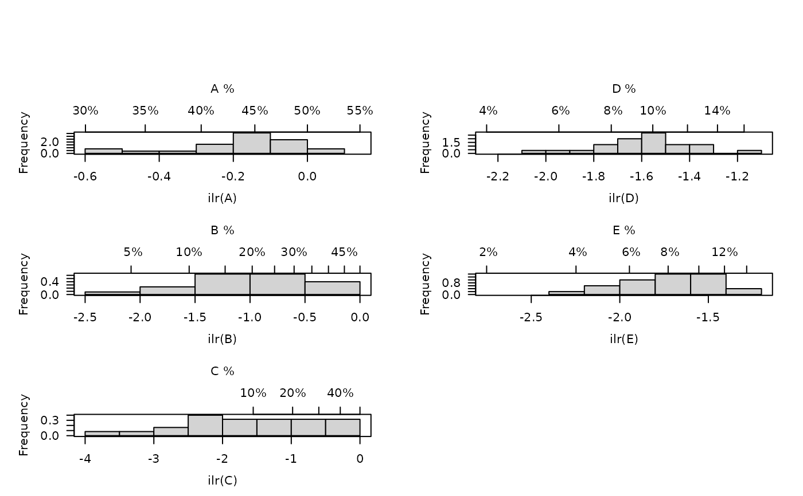
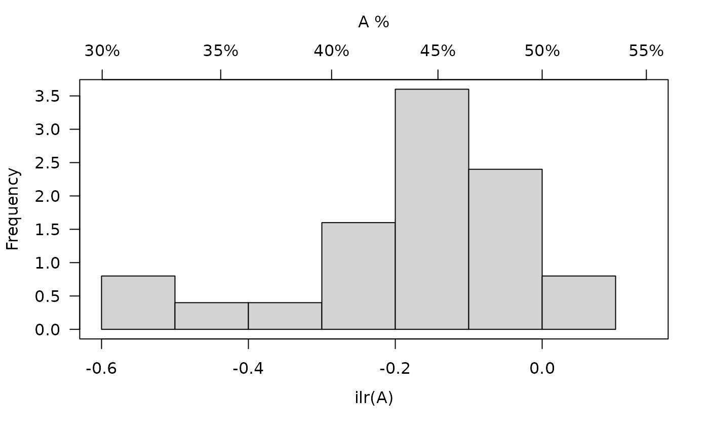

Produces an histogram of univariate ILR data (see Filzmoser et al., 2009).
Usage
# S4 method for CompositionMatrix
hist(
x,
...,
freq = FALSE,
ncol = NULL,
flip = FALSE,
main = NULL,
sub = NULL,
ann = graphics::par("ann"),
axes = TRUE,
frame.plot = axes
)Arguments
- x
A
CompositionMatrixobject.- ...
Further parameters to be passed to
graphics::hist().- freq
A
logicalscalar: should absolute frequencies (counts) be displayed? IfFALSE(the default), relative frequencies (probabilities) are displayed (seegraphics::hist()).- ncol
An
integerspecifying the number of columns to use. Defaults to 1 for up to 4 parts, otherwise to 2.- flip
A
logicalscalar: should the y-axis (ticks and numbering) be flipped from side 2 (left) to 4 (right) from variable to variable?- main
A
characterstring giving a main title for the plot.- sub
A
characterstring giving a subtitle for the plot.- ann
A
logicalscalar: should the default annotation (title and x and y axis labels) appear on the plot?- axes
A
logicalscalar: should axes be drawn on the plot?- frame.plot
A
logicalscalar: should a box be drawn around the plot?
Value
hist() is called for its side-effects: is results in a graphic being
displayed (invisibly return x).
References
Filzmoser, P., Hron, K. & Reimann, C. (2009). Univariate Statistical Analysis of Environmental (Compositional) Data: Problems and Possibilities. Science of The Total Environment, 407(23): 6100-6108. doi:10.1016/j.scitotenv.2009.08.008 .
See also
Other plot methods:
as_graph(),
barplot(),
plot(),
plot_logratio
Examples
## Data from Aitchison 1986
data("hongite")
## Coerce to compositional data
coda <- as_composition(hongite)
## Boxplot plot
hist(coda)

hist(coda[, 1, drop = FALSE])

univariate_ilr(coda)
#> A B C D E
#> H1 -0.033947644 -0.54277028 -2.2849649 -1.896978 -1.610466
#> H2 -0.050933699 -0.82284311 -1.6359869 -1.618890 -1.569527
#> H3 -0.376334118 -1.62739607 -0.4627266 -1.593860 -1.538097
#> H4 0.025458594 -0.82284311 -1.8076235 -1.545850 -1.727000
#> H5 -0.164790585 -0.33717258 -2.4826736 -1.756329 -1.840000
#> H6 0.065099767 -0.73227930 -2.2112489 -1.375966 -2.112385
#> H7 -0.153333089 -0.50076246 -2.1439635 -1.395564 -1.997417
#> H8 -0.450192668 -2.05280932 -0.2021847 -1.585674 -1.756329
#> H9 -0.251520427 -1.42916977 -0.7141050 -1.585674 -1.492939
#> H10 -0.210852206 -0.09631516 -3.5035872 -1.997417 -2.160246
#> H11 -0.002828431 -1.00256620 -1.4499355 -1.593860 -1.577563
#> H12 -0.136183892 -0.36724872 -2.5346576 -2.010907 -1.610466
#> H13 -0.510379180 -1.68027862 -0.3192712 -1.727000 -1.415581
#> H14 -0.245686949 -1.35045344 -0.8385304 -1.183120 -1.885259
#> H15 -0.107687886 -1.09643795 -1.1831204 -1.698659 -1.395564
#> H16 -0.523272418 -1.79710773 -0.2602866 -1.350453 -1.873707
#> H17 -0.193532178 -0.16192425 -3.2492404 -1.746438 -2.304557
#> H18 -0.012741007 -0.52222717 -2.4333276 -1.661511 -1.908114
#> H19 -0.219535504 -1.18312045 -0.9627112 -1.698659 -1.331758
#> H20 -0.153333089 -1.44296135 -0.8228431 -1.436040 -1.680279
#> H21 -0.119074531 -1.14144402 -1.1312778 -1.408861 -1.653430
#> H22 -0.002828431 -0.77683620 -1.8510819 -1.485629 -1.786724
#> H23 -0.039608333 -0.46901984 -2.5905293 -1.602123 -2.010907
#> H24 -0.127624554 -1.14144402 -1.0915512 -1.585674 -1.500309
#> H25 -0.116226483 -0.78061248 -1.5775634 -1.569527 -1.577563